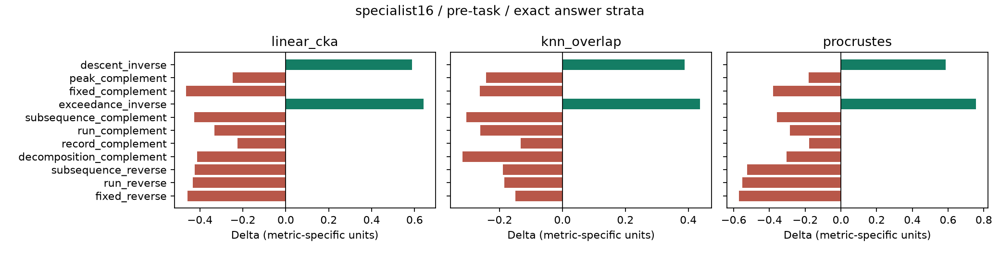
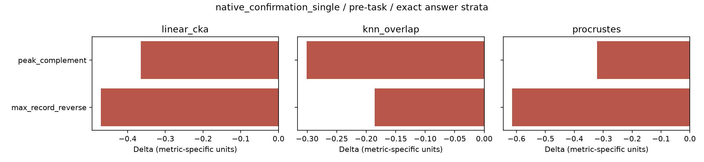
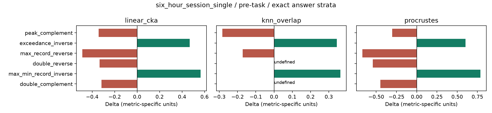
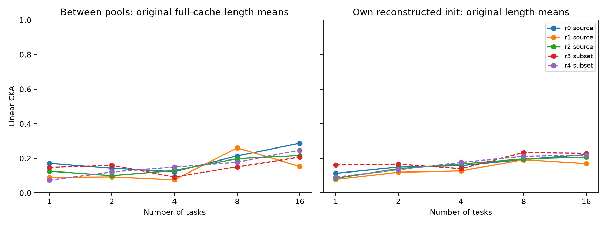

已复用完成权重，扩展关系与度量，并完成 F5 第二实例的探索评估。新增源训练：0。本报告不作数学机制或确认性推断。
下表是逻辑条目和不同权重容器，不是独立实验数。原48+50位置去重为94 checkpoint；k16的6个端点复用旧v3权重。F17容器只盘点。所有本轮选中完成权重均在本地可访问，不需下载release或重训。
| cohort | logical_positions | completed_records | accessible_weights | distinct_file_sha256 | reused_endpoints | partial | plans_only |
|---|---|---|---|---|---|---|---|
| F13_polynomial_ordinary_sources | 3 | 3 | 3 | 3 | 0 | 0 | 0 |
| F17_functional_fresh17_local | 17 | 0 | 17 | 17 | 0 | 0 | 0 |
| F17_functional_original5 | 5 | 0 | 5 | 5 | 0 | 0 | 0 |
| F5_matched_support27 | 27 | 27 | 27 | 27 | 0 | 0 | 0 |
| F5_rank3_pilot24 | 24 | 24 | 24 | 24 | 0 | 0 | 0 |
| F5_rank3_replication48 | 48 | 48 | 48 | 48 | 0 | 0 | 0 |
| F5_rank4_symmetry45 | 45 | 45 | 45 | 45 | 0 | 0 | 0 |
| algebra_structure_replication9 | 9 | 9 | 9 | 9 | 0 | 0 | 0 |
| joint_four_representations | 3 | 3 | 3 | 3 | 0 | 0 | 0 |
| k16_data_depth | 24 | 24 | 24 | 24 | 6 | 0 | 0 |
| native_ablation_paused | 42 | 13 | 14 | 14 | 0 | 1 | 28 |
| native_confirmation_multi | 26 | 26 | 26 | 26 | 0 | 0 | 0 |
| native_confirmation_single | 20 | 20 | 20 | 20 | 0 | 0 | 0 |
| ordinary_relation_seed_confirmation | 9 | 9 | 9 | 9 | 0 | 0 | 0 |
| permworld_combinations_pilot24 | 24 | 24 | 24 | 24 | 0 | 0 | 0 |
| property32_k | 50 | 50 | 50 | 50 | 0 | 0 | 0 |
| property_bundles4 | 60 | 60 | 60 | 60 | 0 | 0 | 0 |
| relation_controlled_paused_pilot | 4 | 4 | 4 | 4 | 0 | 0 | 0 |
| six_hour_session_calibration | 9 | 9 | 9 | 9 | 0 | 0 | 0 |
| six_hour_session_multi | 24 | 24 | 24 | 24 | 0 | 0 | 0 |
| six_hour_session_single | 25 | 24 | 25 | 25 | 0 | 1 | 0 |
| specialist16 | 48 | 48 | 48 | 48 | 0 | 0 | 0 |
| v2_nested | 30 | 30 | 30 | 30 | 0 | 0 | 0 |
| v3_nested_category | 48 | 48 | 48 | 48 | 0 | 0 | 0 |
完整状态、配置、哈希、缓存和缺口见 training_inventory.csv。PermWorld初始化均为C：按原构造器/词表/RNG路径重建，原始权重身份未获验证。F5 encoder使用实际step-0激活B；初始输出头重建为C。{'A': 0, 'B': 72, 'C': 156, 'D': 396}。未选中的状态未为填表而全部加载，参数哈希缺项明确保留。
穷举S1–S7和固定大n随机样本，共8,601排列×19条公式均通过。18条有匹配完成权重，组成62个关系/源配对。新增反转的LIS/LDS、run、fixed/anti-fixed，左/右最大纪录，双升/双降；取逆的左最大/右最小纪录；补值的双升/双降均可复用。三个取逆自不变性单列；缺匹配cohort的左/右最小纪录关系不跨批拼接。
补值也是部分反转任务对的正确变换，因此不能作为它们的错误对照；错误变换已按oracle反例在读取指标前固定。共享任务/群作用关系带依赖标签，18条不是18个独立性质族。
关系覆盖图 · 数学证书 · 冻结度量协议 · 冻结汇总规则
每长度独立计算，固定1/21汇总。主点为输入结束、任务提示前final-layer状态。B0=初始化正确−错误；Bt=训练正确−错误；dc/dw为各自训练变化；Δ=Bt−B0=dc−dw。Procrustes score=−NRMSE，原始误差保留。正Δ不能单独解释为正确表征趋同。
答案分层主位置：三指标都可定义的源/关系单元，Bt方向一致 46/48；Δ方向一致 48/48。这是共享关系/源的描述性覆盖计数，不能当作独立重复。分歧与负值全部保留。
最稳的正增量是原两条取逆关系：descents/recoils与exceedances/deficiencies三个源在三类指标上均为正Δ。各3源×21长度中三指标与debiased CKA的Δ均正，不由单一长度驱动。CKA均值为0.589/0.641，dc分别约−0.034/+0.020、dw约−0.623/−0.621，因此主要表现为错误配对相似度下降。六小时的左最大/右最小纪录取逆也正向，但仅一源。这里超过的是重建初始化参照C，不能确认实际原始初始权重的增量。
新增反转/补值的平均Bt多数正而Δ负；初始化起点较高，不能据Δ负否定学习。native左/右最大纪录反转seed1009与3037的Bt：普通CKA略负，邻域/Procrustes略正；debiased CKA也变为正，故这一弱训练后偏好依赖指标版本，Δ仍负。双升/双降的邻域指标在两个长度样本不足，严格21长度汇总未定义。
| cohort | relation | metric | sources | defined | B0 | Bt | dc | dw | Delta | median | min | max | positive_sources |
|---|---|---|---|---|---|---|---|---|---|---|---|---|---|
| specialist16 | descent_inverse | linear_cka | 3 | 3 | -0.5060 | 0.0830 | -0.0339 | -0.6228 | 0.5890 | 0.5773 | 0.5672 | 0.6224 | 3 |
| specialist16 | descent_inverse | knn_overlap | 3 | 3 | -0.3470 | 0.0419 | 0.0131 | -0.3758 | 0.3889 | 0.3871 | 0.3864 | 0.3932 | 3 |
| specialist16 | descent_inverse | procrustes | 3 | 3 | -0.4717 | 0.1135 | 0.0590 | -0.5262 | 0.5852 | 0.5907 | 0.5729 | 0.5919 | 3 |
| specialist16 | peak_complement | linear_cka | 3 | 3 | 0.4983 | 0.2500 | -0.3995 | -0.1512 | -0.2483 | -0.2995 | -0.3246 | -0.1207 | 0 |
| specialist16 | peak_complement | knn_overlap | 3 | 3 | 0.3461 | 0.1034 | -0.2711 | -0.0284 | -0.2427 | -0.2608 | -0.2688 | -0.1986 | 0 |
| specialist16 | peak_complement | procrustes | 3 | 3 | 0.4821 | 0.3011 | -0.2172 | -0.0362 | -0.1810 | -0.2293 | -0.2600 | -0.0537 | 0 |
| six_hour_session_single | peak_complement | linear_cka | 2 | 2 | 0.5029 | 0.1606 | -0.4746 | -0.1323 | -0.3423 | -0.3423 | -0.4019 | -0.2828 | 0 |
| six_hour_session_single | peak_complement | knn_overlap | 2 | 2 | 0.3480 | 0.0648 | -0.3052 | -0.0220 | -0.2832 | -0.2832 | -0.3113 | -0.2550 | 0 |
| six_hour_session_single | peak_complement | procrustes | 2 | 2 | 0.5195 | 0.2182 | -0.3103 | -0.0090 | -0.3013 | -0.3013 | -0.3659 | -0.2367 | 0 |
| native_confirmation_single | peak_complement | linear_cka | 5 | 5 | 0.5207 | 0.1557 | -0.4960 | -0.1310 | -0.3650 | -0.3916 | -0.4513 | -0.2517 | 0 |
| native_confirmation_single | peak_complement | knn_overlap | 5 | 5 | 0.3573 | 0.0563 | -0.3257 | -0.0247 | -0.3010 | -0.2857 | -0.3453 | -0.2505 | 0 |
| native_confirmation_single | peak_complement | procrustes | 5 | 5 | 0.5220 | 0.2009 | -0.3547 | -0.0337 | -0.3211 | -0.3354 | -0.4195 | -0.2202 | 0 |
| specialist16 | fixed_complement | linear_cka | 3 | 3 | 0.5278 | 0.0644 | -0.5785 | -0.1152 | -0.4634 | -0.4562 | -0.5106 | -0.4234 | 0 |
| specialist16 | fixed_complement | knn_overlap | 3 | 3 | 0.3540 | 0.0909 | -0.2825 | -0.0195 | -0.2631 | -0.2560 | -0.2989 | -0.2343 | 0 |
| specialist16 | fixed_complement | procrustes | 3 | 3 | 0.4923 | 0.1122 | -0.3963 | -0.0162 | -0.3801 | -0.3696 | -0.4399 | -0.3307 | 0 |
| specialist16 | exceedance_inverse | linear_cka | 3 | 3 | -0.4622 | 0.1793 | 0.0205 | -0.6210 | 0.6415 | 0.6252 | 0.6069 | 0.6923 | 3 |
| specialist16 | exceedance_inverse | knn_overlap | 3 | 3 | -0.3292 | 0.1073 | 0.0789 | -0.3576 | 0.4365 | 0.4231 | 0.4217 | 0.4646 | 3 |
| specialist16 | exceedance_inverse | procrustes | 3 | 3 | -0.5172 | 0.2391 | 0.2145 | -0.5418 | 0.7563 | 0.7698 | 0.7245 | 0.7746 | 3 |
| six_hour_session_single | exceedance_inverse | linear_cka | 1 | 1 | -0.4368 | 0.0318 | -0.1115 | -0.5800 | 0.4685 | 0.4685 | 0.4685 | 0.4685 | 1 |
| six_hour_session_single | exceedance_inverse | knn_overlap | 1 | 1 | -0.3056 | 0.0390 | 0.0105 | -0.3340 | 0.3445 | 0.3445 | 0.3445 | 0.3445 | 1 |
| six_hour_session_single | exceedance_inverse | procrustes | 1 | 1 | -0.4981 | 0.1039 | 0.0488 | -0.5532 | 0.6020 | 0.6020 | 0.6020 | 0.6020 | 1 |
| specialist16 | subsequence_complement | linear_cka | 3 | 3 | 0.5428 | 0.1175 | -0.4735 | -0.0482 | -0.4253 | -0.4294 | -0.4680 | -0.3786 | 0 |
| specialist16 | subsequence_complement | knn_overlap | 3 | 3 | 0.3609 | 0.0558 | -0.3127 | -0.0076 | -0.3051 | -0.3020 | -0.3155 | -0.2977 | 0 |
| specialist16 | subsequence_complement | procrustes | 3 | 3 | 0.5121 | 0.1553 | -0.3235 | 0.0334 | -0.3569 | -0.3240 | -0.4344 | -0.3122 | 0 |
| specialist16 | run_complement | linear_cka | 3 | 3 | 0.5119 | 0.1800 | -0.4366 | -0.1047 | -0.3319 | -0.3075 | -0.4370 | -0.2512 | 0 |
| specialist16 | run_complement | knn_overlap | 3 | 3 | 0.3456 | 0.0848 | -0.2901 | -0.0292 | -0.2608 | -0.2596 | -0.2939 | -0.2290 | 0 |
| specialist16 | run_complement | procrustes | 3 | 3 | 0.4749 | 0.1884 | -0.3349 | -0.0484 | -0.2865 | -0.2740 | -0.3485 | -0.2371 | 0 |
| specialist16 | record_complement | linear_cka | 3 | 3 | 0.5324 | 0.3082 | -0.3160 | -0.0918 | -0.2242 | -0.2551 | -0.2787 | -0.1387 | 0 |
| specialist16 | record_complement | knn_overlap | 3 | 3 | 0.3607 | 0.2281 | -0.1473 | -0.0147 | -0.1326 | -0.1718 | -0.1879 | -0.0381 | 0 |
| specialist16 | record_complement | procrustes | 3 | 3 | 0.5413 | 0.3635 | -0.1798 | -0.0020 | -0.1778 | -0.2151 | -0.2267 | -0.0916 | 0 |
| specialist16 | decomposition_complement | linear_cka | 3 | 3 | 0.5376 | 0.1258 | -0.5110 | -0.0993 | -0.4118 | -0.4282 | -0.4534 | -0.3537 | 0 |
| specialist16 | decomposition_complement | knn_overlap | 3 | 3 | 0.3643 | 0.0467 | -0.3020 | 0.0156 | -0.3176 | -0.3174 | -0.3191 | -0.3162 | 0 |
| specialist16 | decomposition_complement | procrustes | 3 | 3 | 0.4969 | 0.1938 | -0.3224 | -0.0193 | -0.3030 | -0.3087 | -0.3660 | -0.2343 | 0 |
| specialist16 | subsequence_reverse | linear_cka | 3 | 3 | 0.5385 | 0.1152 | -0.4715 | -0.0482 | -0.4233 | -0.4291 | -0.4322 | -0.4085 | 0 |
| specialist16 | subsequence_reverse | knn_overlap | 3 | 3 | 0.2456 | 0.0566 | -0.1966 | -0.0076 | -0.1889 | -0.1865 | -0.1970 | -0.1834 | 0 |
| specialist16 | subsequence_reverse | procrustes | 3 | 3 | 0.6771 | 0.1530 | -0.4908 | 0.0334 | -0.5242 | -0.5255 | -0.5497 | -0.4974 | 0 |
| specialist16 | run_reverse | linear_cka | 3 | 3 | 0.5091 | 0.0757 | -0.5381 | -0.1047 | -0.4334 | -0.4214 | -0.4805 | -0.3983 | 0 |
| specialist16 | run_reverse | knn_overlap | 3 | 3 | 0.2442 | 0.0593 | -0.2140 | -0.0292 | -0.1848 | -0.1864 | -0.1864 | -0.1816 | 0 |
| specialist16 | run_reverse | procrustes | 3 | 3 | 0.6515 | 0.1010 | -0.5989 | -0.0484 | -0.5505 | -0.5469 | -0.6202 | -0.4843 | 0 |
| specialist16 | fixed_reverse | linear_cka | 3 | 3 | 0.5243 | 0.0675 | -0.5720 | -0.1152 | -0.4568 | -0.4305 | -0.5206 | -0.4192 | 0 |
| specialist16 | fixed_reverse | knn_overlap | 3 | 3 | 0.2411 | 0.0915 | -0.1691 | -0.0195 | -0.1496 | -0.1484 | -0.2002 | -0.1002 | 0 |
| specialist16 | fixed_reverse | procrustes | 3 | 3 | 0.6720 | 0.1004 | -0.5878 | -0.0162 | -0.5716 | -0.5404 | -0.6387 | -0.5357 | 0 |
| six_hour_session_single | max_record_reverse | linear_cka | 1 | 1 | 0.5347 | 0.0476 | -0.5320 | -0.0448 | -0.4871 | -0.4871 | -0.4871 | -0.4871 | 0 |
| six_hour_session_single | max_record_reverse | knn_overlap | 1 | 1 | 0.2437 | 0.0716 | -0.1695 | 0.0025 | -0.1721 | -0.1721 | -0.1721 | -0.1721 | 0 |
| six_hour_session_single | max_record_reverse | procrustes | 1 | 1 | 0.7003 | 0.0289 | -0.5901 | 0.0813 | -0.6714 | -0.6714 | -0.6714 | -0.6714 | 0 |
| native_confirmation_single | max_record_reverse | linear_cka | 5 | 5 | 0.5117 | 0.0410 | -0.5248 | -0.0541 | -0.4708 | -0.4887 | -0.5401 | -0.3989 | 0 |
| native_confirmation_single | max_record_reverse | knn_overlap | 5 | 5 | 0.2383 | 0.0530 | -0.1700 | 0.0154 | -0.1854 | -0.2081 | -0.2282 | -0.1343 | 0 |
| native_confirmation_single | max_record_reverse | procrustes | 5 | 5 | 0.6672 | 0.0526 | -0.5476 | 0.0670 | -0.6146 | -0.6395 | -0.6761 | -0.5458 | 0 |
| six_hour_session_single | double_reverse | linear_cka | 2 | 2 | 0.3500 | 0.0166 | -0.5329 | -0.1994 | -0.3335 | -0.3335 | -0.3745 | -0.2925 | 0 |
| six_hour_session_single | double_reverse | knn_overlap | 2 | 0 | 未定义／缺失 | 未定义／缺失 | 未定义／缺失 | 未定义／缺失 | 未定义／缺失 | 未定义／缺失 | 未定义／缺失 | 未定义／缺失 | 0 |
| six_hour_session_single | double_reverse | procrustes | 2 | 2 | 0.5899 | 0.0465 | -0.6238 | -0.0803 | -0.5434 | -0.5434 | -0.6043 | -0.4825 | 0 |
| six_hour_session_single | max_min_record_inverse | linear_cka | 1 | 1 | -0.3945 | 0.1696 | -0.0002 | -0.5643 | 0.5641 | 0.5641 | 0.5641 | 0.5641 | 1 |
| six_hour_session_single | max_min_record_inverse | knn_overlap | 1 | 1 | -0.2764 | 0.0877 | 0.0621 | -0.3019 | 0.3640 | 0.3640 | 0.3640 | 0.3640 | 1 |
| six_hour_session_single | max_min_record_inverse | procrustes | 1 | 1 | -0.4995 | 0.2878 | 0.2543 | -0.5331 | 0.7874 | 0.7874 | 0.7874 | 0.7874 | 1 |
| six_hour_session_single | double_complement | linear_cka | 2 | 2 | 0.3405 | 0.0226 | -0.5173 | -0.1994 | -0.3178 | -0.3178 | -0.3209 | -0.3148 | 0 |
| six_hour_session_single | double_complement | knn_overlap | 2 | 0 | 未定义／缺失 | 未定义／缺失 | 未定义／缺失 | 未定义／缺失 | 未定义／缺失 | 未定义／缺失 | 未定义／缺失 | 未定义／缺失 | 0 |
| six_hour_session_single | double_complement | procrustes | 2 | 2 | 0.5124 | 0.0627 | -0.5300 | -0.0803 | -0.4496 | -0.4496 | -0.4651 | -0.4342 | 0 |



普通CKA/debiased敏感性、全部源与逐长度数据见 metric_results.csv、源级汇总、共同源方向比较。不比较不同指标数值大小。8维PCA Procrustes只评价所选子空间，不能推断完整隐藏状态可线性预测。
| cohort | metric | excluded_family | remaining_relations | Bt | delta | delta_correct | delta_wrong |
|---|---|---|---|---|---|---|---|
| specialist16 | linear_cka | none | 11 | 0.1424 | -0.1989 | -0.3918 | -0.1929 |
| specialist16 | linear_cka | decomposition | 10 | 0.1441 | -0.1776 | -0.3799 | -0.2023 |
| specialist16 | linear_cka | descent_recoil | 10 | 0.1484 | -0.2777 | -0.4276 | -0.1500 |
| specialist16 | linear_cka | fixed | 9 | 0.1594 | -0.1409 | -0.3511 | -0.2102 |
| specialist16 | linear_cka | interior | 10 | 0.1317 | -0.1940 | -0.3911 | -0.1971 |
| specialist16 | linear_cka | positions | 10 | 0.1387 | -0.2829 | -0.4331 | -0.1501 |
| specialist16 | linear_cka | records | 10 | 0.1258 | -0.1964 | -0.3994 | -0.2031 |
| specialist16 | linear_cka | run | 9 | 0.1457 | -0.1581 | -0.3706 | -0.2125 |
| specialist16 | linear_cka | subsequence | 9 | 0.1482 | -0.1488 | -0.3739 | -0.2251 |
| specialist16 | knn_overlap | none | 11 | 0.0879 | -0.1109 | -0.1903 | -0.0794 |
| specialist16 | knn_overlap | decomposition | 10 | 0.0920 | -0.0902 | -0.1791 | -0.0889 |
| specialist16 | knn_overlap | descent_recoil | 10 | 0.0925 | -0.1609 | -0.2107 | -0.0498 |
| specialist16 | knn_overlap | fixed | 9 | 0.0871 | -0.0897 | -0.1824 | -0.0927 |
| specialist16 | knn_overlap | interior | 10 | 0.0863 | -0.0977 | -0.1822 | -0.0845 |
| specialist16 | knn_overlap | positions | 10 | 0.0859 | -0.1656 | -0.2172 | -0.0516 |
| specialist16 | knn_overlap | records | 10 | 0.0738 | -0.1087 | -0.1946 | -0.0859 |
| specialist16 | knn_overlap | run | 9 | 0.0914 | -0.0860 | -0.1766 | -0.0906 |
| specialist16 | knn_overlap | subsequence | 9 | 0.0949 | -0.0806 | -0.1760 | -0.0954 |
| specialist16 | procrustes | none | 11 | 0.1837 | -0.1809 | -0.2889 | -0.1080 |
| specialist16 | procrustes | decomposition | 10 | 0.1827 | -0.1687 | -0.2856 | -0.1169 |
| specialist16 | procrustes | descent_recoil | 10 | 0.1908 | -0.2575 | -0.3237 | -0.0662 |
| specialist16 | procrustes | fixed | 9 | 0.2010 | -0.1154 | -0.2438 | -0.1284 |
| specialist16 | procrustes | interior | 10 | 0.1720 | -0.1809 | -0.2961 | -0.1152 |
| specialist16 | procrustes | positions | 10 | 0.1782 | -0.2746 | -0.3393 | -0.0646 |
| specialist16 | procrustes | records | 10 | 0.1658 | -0.1812 | -0.2998 | -0.1186 |
| specialist16 | procrustes | run | 9 | 0.1924 | -0.1281 | -0.2494 | -0.1212 |
| specialist16 | procrustes | subsequence | 9 | 0.1903 | -0.1232 | -0.2626 | -0.1394 |
| six_hour_session_single | linear_cka | none | 6 | 0.0748 | -0.0747 | -0.3614 | -0.2867 |
| six_hour_session_single | linear_cka | interior | 3 | 0.0830 | 0.1818 | -0.2146 | -0.3964 |
| six_hour_session_single | linear_cka | positions | 5 | 0.0834 | -0.1833 | -0.4114 | -0.2281 |
| six_hour_session_single | linear_cka | records | 4 | 0.0579 | -0.1313 | -0.4091 | -0.2778 |
| six_hour_session_single | knn_overlap | none | 6 | 未定义／缺失 | 未定义／缺失 | 未定义／缺失 | 未定义／缺失 |
| six_hour_session_single | knn_overlap | interior | 3 | 0.0661 | 0.1788 | -0.0323 | -0.2111 |
| six_hour_session_single | knn_overlap | positions | 5 | 未定义／缺失 | 未定义／缺失 | 未定义／缺失 | 未定义／缺失 |
| six_hour_session_single | knn_overlap | records | 4 | 未定义／缺失 | 未定义／缺失 | 未定义／缺失 | 未定义／缺失 |
| six_hour_session_single | procrustes | none | 6 | 0.1247 | -0.0961 | -0.2918 | -0.1958 |
| six_hour_session_single | procrustes | interior | 3 | 0.1402 | 0.2393 | -0.0957 | -0.3350 |
| six_hour_session_single | procrustes | positions | 5 | 0.1288 | -0.2357 | -0.3600 | -0.1243 |
| six_hour_session_single | procrustes | records | 4 | 0.1078 | -0.1731 | -0.3538 | -0.1807 |
| native_confirmation_single | linear_cka | none | 2 | 0.0983 | -0.4179 | -0.5104 | -0.0925 |
| native_confirmation_single | linear_cka | interior | 1 | 0.0410 | -0.4708 | -0.5248 | -0.0541 |
| native_confirmation_single | linear_cka | records | 1 | 0.1557 | -0.3650 | -0.4960 | -0.1310 |
| native_confirmation_single | knn_overlap | none | 2 | 0.0546 | -0.2432 | -0.2478 | -0.0046 |
| native_confirmation_single | knn_overlap | interior | 1 | 0.0530 | -0.1854 | -0.1700 | 0.0154 |
| native_confirmation_single | knn_overlap | records | 1 | 0.0563 | -0.3010 | -0.3257 | -0.0247 |
| native_confirmation_single | procrustes | none | 2 | 0.1268 | -0.4678 | -0.4511 | 0.0167 |
| native_confirmation_single | procrustes | interior | 1 | 0.0526 | -0.6146 | -0.5476 | 0.0670 |
| native_confirmation_single | procrustes | records | 1 | 0.2009 | -0.3211 | -0.3547 | -0.0337 |
严格答案分层对fit/test分别去组均值，是oracle测量控制；不是无需答案的可部署预测器。真值答案几何为静态基线，没有虚构初始化或标签学习Δ。输出分支仅数字0–30条件概率，保留误差/置信度结构。query另列，不能代替任务前表征；未拼接为source_query_concat。
历史输入kernel控制和CKA置换/输入bootstrap已复用，其范围见 继承控制审计。这些原协议控制不能直接充作新kNN或Procrustes的输入抽样区间，也不能覆盖未测的反转输入kernel。隐藏Δ减输出Δ不识别额外机制。
| domain | cohort | relation | branch | metric | B0_mean | Bt_mean | delta_correct_mean | delta_wrong_mean | delta_mean | delta_sources |
|---|---|---|---|---|---|---|---|---|---|---|
| PermWorld | specialist16 | descent_inverse | output_prob | linear_cka | -0.3312 | 0.5268 | 0.4634 | -0.3945 | 0.8579 | 3 |
| PermWorld | specialist16 | descent_inverse | output_prob | knn_overlap | -0.1883 | 0.1622 | 0.1503 | -0.2002 | 0.3505 | 3 |
| PermWorld | specialist16 | descent_inverse | output_prob | procrustes | -0.3950 | 0.6438 | 0.6409 | -0.3993 | 1.0402 | 2 |
| PermWorld | specialist16 | descent_inverse | answer_onehot | linear_cka | 未定义／缺失 | 0.9570 | 未定义／缺失 | 未定义／缺失 | 未定义／缺失 | 0 |
| PermWorld | specialist16 | descent_inverse | answer_onehot | knn_overlap | 未定义／缺失 | 0.8002 | 未定义／缺失 | 未定义／缺失 | 未定义／缺失 | 0 |
| PermWorld | specialist16 | descent_inverse | answer_onehot | procrustes | 未定义／缺失 | 未定义／缺失 | 未定义／缺失 | 未定义／缺失 | 未定义／缺失 | 0 |
| PermWorld | specialist16 | descent_inverse | answer_scalar | linear_cka | 未定义／缺失 | 0.8877 | 未定义／缺失 | 未定义／缺失 | 未定义／缺失 | 0 |
| PermWorld | specialist16 | descent_inverse | answer_scalar | knn_overlap | 未定义／缺失 | 0.8069 | 未定义／缺失 | 未定义／缺失 | 未定义／缺失 | 0 |
| PermWorld | specialist16 | descent_inverse | answer_scalar | procrustes | 未定义／缺失 | 1.1471 | 未定义／缺失 | 未定义／缺失 | 未定义／缺失 | 0 |
| PermWorld | specialist16 | peak_complement | output_prob | linear_cka | 0.3308 | 0.5956 | 0.1810 | -0.0838 | 0.2648 | 3 |
| PermWorld | specialist16 | peak_complement | output_prob | knn_overlap | 0.1881 | 0.1351 | -0.0710 | -0.0180 | -0.0529 | 3 |
| PermWorld | specialist16 | peak_complement | output_prob | procrustes | 0.3957 | 0.7485 | 0.3016 | -0.0512 | 0.3528 | 3 |
| PermWorld | specialist16 | peak_complement | answer_onehot | linear_cka | 未定义／缺失 | 0.9817 | 未定义／缺失 | 未定义／缺失 | 未定义／缺失 | 0 |
| PermWorld | specialist16 | peak_complement | answer_onehot | knn_overlap | 未定义／缺失 | 0.7556 | 未定义／缺失 | 未定义／缺失 | 未定义／缺失 | 0 |
| PermWorld | specialist16 | peak_complement | answer_onehot | procrustes | 未定义／缺失 | 未定义／缺失 | 未定义／缺失 | 未定义／缺失 | 未定义／缺失 | 0 |
| PermWorld | specialist16 | peak_complement | answer_scalar | linear_cka | 未定义／缺失 | 0.9894 | 未定义／缺失 | 未定义／缺失 | 未定义／缺失 | 0 |
| PermWorld | specialist16 | peak_complement | answer_scalar | knn_overlap | 未定义／缺失 | 0.7617 | 未定义／缺失 | 未定义／缺失 | 未定义／缺失 | 0 |
| PermWorld | specialist16 | peak_complement | answer_scalar | procrustes | 未定义／缺失 | 1.4288 | 未定义／缺失 | 未定义／缺失 | 未定义／缺失 | 0 |
| PermWorld | six_hour_session_single | peak_complement | output_prob | linear_cka | 0.3827 | 0.6684 | 0.2310 | -0.0547 | 0.2856 | 2 |
| PermWorld | six_hour_session_single | peak_complement | output_prob | knn_overlap | 0.2175 | 0.1482 | -0.0799 | -0.0105 | -0.0693 | 2 |
| PermWorld | six_hour_session_single | peak_complement | output_prob | procrustes | 0.4496 | 0.8070 | 0.3441 | -0.0133 | 0.3574 | 2 |
| PermWorld | six_hour_session_single | peak_complement | answer_onehot | linear_cka | 未定义／缺失 | 0.9817 | 未定义／缺失 | 未定义／缺失 | 未定义／缺失 | 0 |
| PermWorld | six_hour_session_single | peak_complement | answer_onehot | knn_overlap | 未定义／缺失 | 0.7556 | 未定义／缺失 | 未定义／缺失 | 未定义／缺失 | 0 |
| PermWorld | six_hour_session_single | peak_complement | answer_onehot | procrustes | 未定义／缺失 | 未定义／缺失 | 未定义／缺失 | 未定义／缺失 | 未定义／缺失 | 0 |
| PermWorld | six_hour_session_single | peak_complement | answer_scalar | linear_cka | 未定义／缺失 | 0.9894 | 未定义／缺失 | 未定义／缺失 | 未定义／缺失 | 0 |
| PermWorld | six_hour_session_single | peak_complement | answer_scalar | knn_overlap | 未定义／缺失 | 0.7617 | 未定义／缺失 | 未定义／缺失 | 未定义／缺失 | 0 |
| PermWorld | six_hour_session_single | peak_complement | answer_scalar | procrustes | 未定义／缺失 | 1.4288 | 未定义／缺失 | 未定义／缺失 | 未定义／缺失 | 0 |
| PermWorld | native_confirmation_single | peak_complement | output_prob | linear_cka | 0.3934 | 0.4616 | 0.0012 | -0.0670 | 0.0682 | 5 |
| PermWorld | native_confirmation_single | peak_complement | output_prob | knn_overlap | 0.2180 | 0.0950 | -0.1377 | -0.0147 | -0.1230 | 5 |
| PermWorld | native_confirmation_single | peak_complement | output_prob | procrustes | 0.4438 | 0.5714 | 0.0909 | -0.0366 | 0.1275 | 5 |
| PermWorld | native_confirmation_single | peak_complement | answer_onehot | linear_cka | 未定义／缺失 | 0.9817 | 未定义／缺失 | 未定义／缺失 | 未定义／缺失 | 0 |
| PermWorld | native_confirmation_single | peak_complement | answer_onehot | knn_overlap | 未定义／缺失 | 0.7556 | 未定义／缺失 | 未定义／缺失 | 未定义／缺失 | 0 |
| PermWorld | native_confirmation_single | peak_complement | answer_onehot | procrustes | 未定义／缺失 | 未定义／缺失 | 未定义／缺失 | 未定义／缺失 | 未定义／缺失 | 0 |
| PermWorld | native_confirmation_single | peak_complement | answer_scalar | linear_cka | 未定义／缺失 | 0.9894 | 未定义／缺失 | 未定义／缺失 | 未定义／缺失 | 0 |
| PermWorld | native_confirmation_single | peak_complement | answer_scalar | knn_overlap | 未定义／缺失 | 0.7617 | 未定义／缺失 | 未定义／缺失 | 未定义／缺失 | 0 |
| PermWorld | native_confirmation_single | peak_complement | answer_scalar | procrustes | 未定义／缺失 | 1.4288 | 未定义／缺失 | 未定义／缺失 | 未定义／缺失 | 0 |
| PermWorld | specialist16 | fixed_complement | output_prob | linear_cka | 0.3313 | 0.8265 | 0.4125 | -0.0827 | 0.4952 | 3 |
| PermWorld | specialist16 | fixed_complement | output_prob | knn_overlap | 0.1884 | 0.1850 | -0.0207 | -0.0174 | -0.0033 | 3 |
| PermWorld | specialist16 | fixed_complement | output_prob | procrustes | 0.3957 | 未定义／缺失 | 未定义／缺失 | 未定义／缺失 | 未定义／缺失 | 0 |
| PermWorld | specialist16 | fixed_complement | answer_onehot | linear_cka | 未定义／缺失 | 0.9808 | 未定义／缺失 | 未定义／缺失 | 未定义／缺失 | 0 |
| PermWorld | specialist16 | fixed_complement | answer_onehot | knn_overlap | 未定义／缺失 | 0.7432 | 未定义／缺失 | 未定义／缺失 | 未定义／缺失 | 0 |
| PermWorld | specialist16 | fixed_complement | answer_onehot | procrustes | 未定义／缺失 | 未定义／缺失 | 未定义／缺失 | 未定义／缺失 | 未定义／缺失 | 0 |
| PermWorld | specialist16 | fixed_complement | answer_scalar | linear_cka | 未定义／缺失 | 0.9936 | 未定义／缺失 | 未定义／缺失 | 未定义／缺失 | 0 |
| PermWorld | specialist16 | fixed_complement | answer_scalar | knn_overlap | 未定义／缺失 | 0.7509 | 未定义／缺失 | 未定义／缺失 | 未定义／缺失 | 0 |
| PermWorld | specialist16 | fixed_complement | answer_scalar | procrustes | 未定义／缺失 | 1.4178 | 未定义／缺失 | 未定义／缺失 | 未定义／缺失 | 0 |
| PermWorld | specialist16 | exceedance_inverse | output_prob | linear_cka | -0.3304 | 0.9698 | 0.8977 | -0.4024 | 1.3001 | 3 |
| PermWorld | specialist16 | exceedance_inverse | output_prob | knn_overlap | -0.1885 | 0.3339 | 0.3212 | -0.2012 | 0.5224 | 3 |
| PermWorld | specialist16 | exceedance_inverse | output_prob | procrustes | -0.3947 | 未定义／缺失 | 未定义／缺失 | 未定义／缺失 | 未定义／缺失 | 0 |
| PermWorld | specialist16 | exceedance_inverse | answer_onehot | linear_cka | 未定义／缺失 | 0.9700 | 未定义／缺失 | 未定义／缺失 | 未定义／缺失 | 0 |
| PermWorld | specialist16 | exceedance_inverse | answer_onehot | knn_overlap | 未定义／缺失 | 0.8185 | 未定义／缺失 | 未定义／缺失 | 未定义／缺失 | 0 |
| PermWorld | specialist16 | exceedance_inverse | answer_onehot | procrustes | 未定义／缺失 | 未定义／缺失 | 未定义／缺失 | 未定义／缺失 | 未定义／缺失 | 0 |
| PermWorld | specialist16 | exceedance_inverse | answer_scalar | linear_cka | 未定义／缺失 | 0.9871 | 未定义／缺失 | 未定义／缺失 | 未定义／缺失 | 0 |
| PermWorld | specialist16 | exceedance_inverse | answer_scalar | knn_overlap | 未定义／缺失 | 0.8262 | 未定义／缺失 | 未定义／缺失 | 未定义／缺失 | 0 |
| PermWorld | specialist16 | exceedance_inverse | answer_scalar | procrustes | 未定义／缺失 | 1.4040 | 未定义／缺失 | 未定义／缺失 | 未定义／缺失 | 0 |
| PermWorld | six_hour_session_single | exceedance_inverse | output_prob | linear_cka | -0.3496 | 0.9656 | 0.9234 | -0.3918 | 1.3152 | 1 |
| PermWorld | six_hour_session_single | exceedance_inverse | output_prob | knn_overlap | -0.2019 | 0.3282 | 0.3200 | -0.2102 | 0.5302 | 1 |
| PermWorld | six_hour_session_single | exceedance_inverse | output_prob | procrustes | -0.4302 | 未定义／缺失 | 未定义／缺失 | 未定义／缺失 | 未定义／缺失 | 0 |
| PermWorld | six_hour_session_single | exceedance_inverse | answer_onehot | linear_cka | 未定义／缺失 | 0.9700 | 未定义／缺失 | 未定义／缺失 | 未定义／缺失 | 0 |
| PermWorld | six_hour_session_single | exceedance_inverse | answer_onehot | knn_overlap | 未定义／缺失 | 0.8185 | 未定义／缺失 | 未定义／缺失 | 未定义／缺失 | 0 |
| PermWorld | six_hour_session_single | exceedance_inverse | answer_onehot | procrustes | 未定义／缺失 | 未定义／缺失 | 未定义／缺失 | 未定义／缺失 | 未定义／缺失 | 0 |
| PermWorld | six_hour_session_single | exceedance_inverse | answer_scalar | linear_cka | 未定义／缺失 | 0.9871 | 未定义／缺失 | 未定义／缺失 | 未定义／缺失 | 0 |
| PermWorld | six_hour_session_single | exceedance_inverse | answer_scalar | knn_overlap | 未定义／缺失 | 0.8262 | 未定义／缺失 | 未定义／缺失 | 未定义／缺失 | 0 |
| PermWorld | six_hour_session_single | exceedance_inverse | answer_scalar | procrustes | 未定义／缺失 | 1.4040 | 未定义／缺失 | 未定义／缺失 | 未定义／缺失 | 0 |
| PermWorld | specialist16 | subsequence_complement | output_prob | linear_cka | 0.3310 | 0.8589 | 0.4765 | -0.0514 | 0.5279 | 3 |
| PermWorld | specialist16 | subsequence_complement | output_prob | knn_overlap | 0.1883 | 0.2873 | 0.0964 | -0.0027 | 0.0990 | 3 |
| PermWorld | specialist16 | subsequence_complement | output_prob | procrustes | 0.3958 | 1.0623 | 0.6859 | 0.0194 | 0.6665 | 3 |
| PermWorld | specialist16 | subsequence_complement | answer_onehot | linear_cka | 未定义／缺失 | 0.9531 | 未定义／缺失 | 未定义／缺失 | 未定义／缺失 | 0 |
| PermWorld | specialist16 | subsequence_complement | answer_onehot | knn_overlap | 未定义／缺失 | 0.7558 | 未定义／缺失 | 未定义／缺失 | 未定义／缺失 | 0 |
| PermWorld | specialist16 | subsequence_complement | answer_onehot | procrustes | 未定义／缺失 | 未定义／缺失 | 未定义／缺失 | 未定义／缺失 | 未定义／缺失 | 0 |
| PermWorld | specialist16 | subsequence_complement | answer_scalar | linear_cka | 未定义／缺失 | 0.8050 | 未定义／缺失 | 未定义／缺失 | 未定义／缺失 | 0 |
| PermWorld | specialist16 | subsequence_complement | answer_scalar | knn_overlap | 未定义／缺失 | 0.7592 | 未定义／缺失 | 未定义／缺失 | 未定义／缺失 | 0 |
| PermWorld | specialist16 | subsequence_complement | answer_scalar | procrustes | 未定义／缺失 | 1.0653 | 未定义／缺失 | 未定义／缺失 | 未定义／缺失 | 0 |
| PermWorld | specialist16 | run_complement | output_prob | linear_cka | 0.3299 | 0.9725 | 0.5675 | -0.0751 | 0.6426 | 3 |
| PermWorld | specialist16 | run_complement | output_prob | knn_overlap | 0.1879 | 0.2296 | 0.0275 | -0.0142 | 0.0417 | 3 |
| PermWorld | specialist16 | run_complement | output_prob | procrustes | 0.3941 | 未定义／缺失 | 未定义／缺失 | 未定义／缺失 | 未定义／缺失 | 0 |
| PermWorld | specialist16 | run_complement | answer_onehot | linear_cka | 未定义／缺失 | 0.9740 | 未定义／缺失 | 未定义／缺失 | 未定义／缺失 | 0 |
| PermWorld | specialist16 | run_complement | answer_onehot | knn_overlap | 未定义／缺失 | 0.6933 | 未定义／缺失 | 未定义／缺失 | 未定义／缺失 | 0 |
| PermWorld | specialist16 | run_complement | answer_onehot | procrustes | 未定义／缺失 | 未定义／缺失 | 未定义／缺失 | 未定义／缺失 | 未定义／缺失 | 0 |
| PermWorld | specialist16 | run_complement | answer_scalar | linear_cka | 未定义／缺失 | 0.9785 | 未定义／缺失 | 未定义／缺失 | 未定义／缺失 | 0 |
| PermWorld | specialist16 | run_complement | answer_scalar | knn_overlap | 未定义／缺失 | 0.6991 | 未定义／缺失 | 未定义／缺失 | 未定义／缺失 | 0 |
| PermWorld | specialist16 | run_complement | answer_scalar | procrustes | 未定义／缺失 | 1.3342 | 未定义／缺失 | 未定义／缺失 | 未定义／缺失 | 0 |
| PermWorld | specialist16 | record_complement | output_prob | linear_cka | 0.3299 | 0.9579 | 0.5676 | -0.0604 | 0.6280 | 3 |
| PermWorld | specialist16 | record_complement | output_prob | knn_overlap | 0.1875 | 0.3810 | 0.1873 | -0.0063 | 0.1935 | 3 |
| PermWorld | specialist16 | record_complement | output_prob | procrustes | 0.3948 | 未定义／缺失 | 未定义／缺失 | 未定义／缺失 | 未定义／缺失 | 0 |
| PermWorld | specialist16 | record_complement | answer_onehot | linear_cka | 未定义／缺失 | 0.9584 | 未定义／缺失 | 未定义／缺失 | 未定义／缺失 | 0 |
| PermWorld | specialist16 | record_complement | answer_onehot | knn_overlap | 未定义／缺失 | 0.8199 | 未定义／缺失 | 未定义／缺失 | 未定义／缺失 | 0 |
| PermWorld | specialist16 | record_complement | answer_onehot | procrustes | 未定义／缺失 | 未定义／缺失 | 未定义／缺失 | 未定义／缺失 | 未定义／缺失 | 0 |
| PermWorld | specialist16 | record_complement | answer_scalar | linear_cka | 未定义／缺失 | 0.9005 | 未定义／缺失 | 未定义／缺失 | 未定义／缺失 | 0 |
| PermWorld | specialist16 | record_complement | answer_scalar | knn_overlap | 未定义／缺失 | 0.8232 | 未定义／缺失 | 未定义／缺失 | 未定义／缺失 | 0 |
| PermWorld | specialist16 | record_complement | answer_scalar | procrustes | 未定义／缺失 | 1.1644 | 未定义／缺失 | 未定义／缺失 | 未定义／缺失 | 0 |
| PermWorld | specialist16 | decomposition_complement | output_prob | linear_cka | 0.3307 | 0.9736 | 0.5607 | -0.0822 | 0.6429 | 3 |
| PermWorld | specialist16 | decomposition_complement | output_prob | knn_overlap | 0.1882 | 0.0789 | -0.1150 | -0.0058 | -0.1093 | 3 |
| PermWorld | specialist16 | decomposition_complement | output_prob | procrustes | 0.3946 | 未定义／缺失 | 未定义／缺失 | 未定义／缺失 | 未定义／缺失 | 0 |
| PermWorld | specialist16 | decomposition_complement | answer_onehot | linear_cka | 未定义／缺失 | 0.9808 | 未定义／缺失 | 未定义／缺失 | 未定义／缺失 | 0 |
| PermWorld | specialist16 | decomposition_complement | answer_onehot | knn_overlap | 未定义／缺失 | 0.3326 | 未定义／缺失 | 未定义／缺失 | 未定义／缺失 | 0 |
| PermWorld | specialist16 | decomposition_complement | answer_onehot | procrustes | 未定义／缺失 | 未定义／缺失 | 未定义／缺失 | 未定义／缺失 | 未定义／缺失 | 0 |
| PermWorld | specialist16 | decomposition_complement | answer_scalar | linear_cka | 未定义／缺失 | 0.9837 | 未定义／缺失 | 未定义／缺失 | 未定义／缺失 | 0 |
| PermWorld | specialist16 | decomposition_complement | answer_scalar | knn_overlap | 未定义／缺失 | 0.3458 | 未定义／缺失 | 未定义／缺失 | 未定义／缺失 | 0 |
| PermWorld | specialist16 | decomposition_complement | answer_scalar | procrustes | 未定义／缺失 | 1.4061 | 未定义／缺失 | 未定义／缺失 | 未定义／缺失 | 0 |
| PermWorld | specialist16 | subsequence_reverse | output_prob | linear_cka | 0.5055 | 0.8569 | 0.3000 | -0.0514 | 0.3514 | 3 |
| PermWorld | specialist16 | subsequence_reverse | output_prob | knn_overlap | 0.1861 | 0.2672 | 0.0785 | -0.0027 | 0.0812 | 3 |
| PermWorld | specialist16 | subsequence_reverse | output_prob | procrustes | 0.6390 | 1.0534 | 0.4338 | 0.0194 | 0.4144 | 3 |
| PermWorld | specialist16 | subsequence_reverse | answer_onehot | linear_cka | 未定义／缺失 | 0.9531 | 未定义／缺失 | 未定义／缺失 | 未定义／缺失 | 0 |
| PermWorld | specialist16 | subsequence_reverse | answer_onehot | knn_overlap | 未定义／缺失 | 0.7558 | 未定义／缺失 | 未定义／缺失 | 未定义／缺失 | 0 |
| PermWorld | specialist16 | subsequence_reverse | answer_onehot | procrustes | 未定义／缺失 | 未定义／缺失 | 未定义／缺失 | 未定义／缺失 | 未定义／缺失 | 0 |
| PermWorld | specialist16 | subsequence_reverse | answer_scalar | linear_cka | 未定义／缺失 | 0.8050 | 未定义／缺失 | 未定义／缺失 | 未定义／缺失 | 0 |
| PermWorld | specialist16 | subsequence_reverse | answer_scalar | knn_overlap | 未定义／缺失 | 0.7592 | 未定义／缺失 | 未定义／缺失 | 未定义／缺失 | 0 |
| PermWorld | specialist16 | subsequence_reverse | answer_scalar | procrustes | 未定义／缺失 | 1.0653 | 未定义／缺失 | 未定义／缺失 | 未定义／缺失 | 0 |
| PermWorld | specialist16 | run_reverse | output_prob | linear_cka | 0.5063 | 0.9703 | 0.3889 | -0.0751 | 0.4640 | 3 |
| PermWorld | specialist16 | run_reverse | output_prob | knn_overlap | 0.1875 | 0.2251 | 0.0233 | -0.0142 | 0.0376 | 3 |
| PermWorld | specialist16 | run_reverse | output_prob | procrustes | 0.6390 | 未定义／缺失 | 未定义／缺失 | 未定义／缺失 | 未定义／缺失 | 0 |
| PermWorld | specialist16 | run_reverse | answer_onehot | linear_cka | 未定义／缺失 | 0.9740 | 未定义／缺失 | 未定义／缺失 | 未定义／缺失 | 0 |
| PermWorld | specialist16 | run_reverse | answer_onehot | knn_overlap | 未定义／缺失 | 0.6933 | 未定义／缺失 | 未定义／缺失 | 未定义／缺失 | 0 |
| PermWorld | specialist16 | run_reverse | answer_onehot | procrustes | 未定义／缺失 | 未定义／缺失 | 未定义／缺失 | 未定义／缺失 | 未定义／缺失 | 0 |
| PermWorld | specialist16 | run_reverse | answer_scalar | linear_cka | 未定义／缺失 | 0.9785 | 未定义／缺失 | 未定义／缺失 | 未定义／缺失 | 0 |
| PermWorld | specialist16 | run_reverse | answer_scalar | knn_overlap | 未定义／缺失 | 0.6991 | 未定义／缺失 | 未定义／缺失 | 未定义／缺失 | 0 |
| PermWorld | specialist16 | run_reverse | answer_scalar | procrustes | 未定义／缺失 | 1.3342 | 未定义／缺失 | 未定义／缺失 | 未定义／缺失 | 0 |
| PermWorld | specialist16 | fixed_reverse | output_prob | linear_cka | 0.5057 | 0.8283 | 0.2399 | -0.0827 | 0.3226 | 3 |
| PermWorld | specialist16 | fixed_reverse | output_prob | knn_overlap | 0.1867 | 0.1819 | -0.0222 | -0.0174 | -0.0048 | 3 |
| PermWorld | specialist16 | fixed_reverse | output_prob | procrustes | 0.6389 | 未定义／缺失 | 未定义／缺失 | 未定义／缺失 | 未定义／缺失 | 0 |
| PermWorld | specialist16 | fixed_reverse | answer_onehot | linear_cka | 未定义／缺失 | 0.9808 | 未定义／缺失 | 未定义／缺失 | 未定义／缺失 | 0 |
| PermWorld | specialist16 | fixed_reverse | answer_onehot | knn_overlap | 未定义／缺失 | 0.7432 | 未定义／缺失 | 未定义／缺失 | 未定义／缺失 | 0 |
| PermWorld | specialist16 | fixed_reverse | answer_onehot | procrustes | 未定义／缺失 | 未定义／缺失 | 未定义／缺失 | 未定义／缺失 | 未定义／缺失 | 0 |
| PermWorld | specialist16 | fixed_reverse | answer_scalar | linear_cka | 未定义／缺失 | 0.9936 | 未定义／缺失 | 未定义／缺失 | 未定义／缺失 | 0 |
| PermWorld | specialist16 | fixed_reverse | answer_scalar | knn_overlap | 未定义／缺失 | 0.7509 | 未定义／缺失 | 未定义／缺失 | 未定义／缺失 | 0 |
| PermWorld | specialist16 | fixed_reverse | answer_scalar | procrustes | 未定义／缺失 | 1.4178 | 未定义／缺失 | 未定义／缺失 | 未定义／缺失 | 0 |
| PermWorld | six_hour_session_single | max_record_reverse | output_prob | linear_cka | 0.5615 | 0.8953 | 0.3019 | -0.0319 | 0.3338 | 1 |
| PermWorld | six_hour_session_single | max_record_reverse | output_prob | knn_overlap | 0.1996 | 0.3395 | 0.1390 | -0.0009 | 0.1399 | 1 |
| PermWorld | six_hour_session_single | max_record_reverse | output_prob | procrustes | 0.6966 | 未定义／缺失 | 未定义／缺失 | 未定义／缺失 | 未定义／缺失 | 0 |
| PermWorld | six_hour_session_single | max_record_reverse | answer_onehot | linear_cka | 未定义／缺失 | 0.9598 | 未定义／缺失 | 未定义／缺失 | 未定义／缺失 | 0 |
| PermWorld | six_hour_session_single | max_record_reverse | answer_onehot | knn_overlap | 未定义／缺失 | 0.8199 | 未定义／缺失 | 未定义／缺失 | 未定义／缺失 | 0 |
| PermWorld | six_hour_session_single | max_record_reverse | answer_onehot | procrustes | 未定义／缺失 | 未定义／缺失 | 未定义／缺失 | 未定义／缺失 | 未定义／缺失 | 0 |
| PermWorld | six_hour_session_single | max_record_reverse | answer_scalar | linear_cka | 未定义／缺失 | 0.9049 | 未定义／缺失 | 未定义／缺失 | 未定义／缺失 | 0 |
| PermWorld | six_hour_session_single | max_record_reverse | answer_scalar | knn_overlap | 未定义／缺失 | 0.8257 | 未定义／缺失 | 未定义／缺失 | 未定义／缺失 | 0 |
| PermWorld | six_hour_session_single | max_record_reverse | answer_scalar | procrustes | 未定义／缺失 | 1.1957 | 未定义／缺失 | 未定义／缺失 | 未定义／缺失 | 0 |
| PermWorld | native_confirmation_single | max_record_reverse | output_prob | linear_cka | 0.5156 | 0.9425 | 0.3809 | -0.0460 | 0.4269 | 5 |
| PermWorld | native_confirmation_single | max_record_reverse | output_prob | knn_overlap | 0.1858 | 0.3567 | 0.1709 | -0.0000 | 0.1709 | 5 |
| PermWorld | native_confirmation_single | max_record_reverse | output_prob | procrustes | 0.6530 | 未定义／缺失 | 未定义／缺失 | 未定义／缺失 | 未定义／缺失 | 0 |
| PermWorld | native_confirmation_single | max_record_reverse | answer_onehot | linear_cka | 未定义／缺失 | 0.9598 | 未定义／缺失 | 未定义／缺失 | 未定义／缺失 | 0 |
| PermWorld | native_confirmation_single | max_record_reverse | answer_onehot | knn_overlap | 未定义／缺失 | 0.8199 | 未定义／缺失 | 未定义／缺失 | 未定义／缺失 | 0 |
| PermWorld | native_confirmation_single | max_record_reverse | answer_onehot | procrustes | 未定义／缺失 | 未定义／缺失 | 未定义／缺失 | 未定义／缺失 | 未定义／缺失 | 0 |
| PermWorld | native_confirmation_single | max_record_reverse | answer_scalar | linear_cka | 未定义／缺失 | 0.9049 | 未定义／缺失 | 未定义／缺失 | 未定义／缺失 | 0 |
| PermWorld | native_confirmation_single | max_record_reverse | answer_scalar | knn_overlap | 未定义／缺失 | 0.8257 | 未定义／缺失 | 未定义／缺失 | 未定义／缺失 | 0 |
| PermWorld | native_confirmation_single | max_record_reverse | answer_scalar | procrustes | 未定义／缺失 | 1.1957 | 未定义／缺失 | 未定义／缺失 | 未定义／缺失 | 0 |
| PermWorld | six_hour_session_single | double_reverse | output_prob | linear_cka | 0.5576 | 0.8110 | 0.2166 | -0.0368 | 0.2534 | 2 |
| PermWorld | six_hour_session_single | double_reverse | output_prob | knn_overlap | 0.2024 | 0.3200 | 0.1111 | -0.0065 | 0.1176 | 2 |
| PermWorld | six_hour_session_single | double_reverse | output_prob | procrustes | 0.6902 | 未定义／缺失 | 未定义／缺失 | 未定义／缺失 | 未定义／缺失 | 0 |
| PermWorld | six_hour_session_single | double_reverse | answer_onehot | linear_cka | 未定义／缺失 | 0.9631 | 未定义／缺失 | 未定义／缺失 | 未定义／缺失 | 0 |
| PermWorld | six_hour_session_single | double_reverse | answer_onehot | knn_overlap | 未定义／缺失 | 0.8372 | 未定义／缺失 | 未定义／缺失 | 未定义／缺失 | 0 |
| PermWorld | six_hour_session_single | double_reverse | answer_onehot | procrustes | 未定义／缺失 | 未定义／缺失 | 未定义／缺失 | 未定义／缺失 | 未定义／缺失 | 0 |
| PermWorld | six_hour_session_single | double_reverse | answer_scalar | linear_cka | 未定义／缺失 | 0.9559 | 未定义／缺失 | 未定义／缺失 | 未定义／缺失 | 0 |
| PermWorld | six_hour_session_single | double_reverse | answer_scalar | knn_overlap | 未定义／缺失 | 0.8446 | 未定义／缺失 | 未定义／缺失 | 未定义／缺失 | 0 |
| PermWorld | six_hour_session_single | double_reverse | answer_scalar | procrustes | 未定义／缺失 | 1.2502 | 未定义／缺失 | 未定义／缺失 | 未定义／缺失 | 0 |
| PermWorld | six_hour_session_single | max_min_record_inverse | output_prob | linear_cka | -0.3495 | 0.9571 | 0.9249 | -0.3818 | 1.3066 | 1 |
| PermWorld | six_hour_session_single | max_min_record_inverse | output_prob | knn_overlap | -0.2022 | 0.4186 | 0.4170 | -0.2039 | 0.6209 | 1 |
| PermWorld | six_hour_session_single | max_min_record_inverse | output_prob | procrustes | -0.4315 | 未定义／缺失 | 未定义／缺失 | 未定义／缺失 | 未定义／缺失 | 0 |
| PermWorld | six_hour_session_single | max_min_record_inverse | answer_onehot | linear_cka | 未定义／缺失 | 0.9598 | 未定义／缺失 | 未定义／缺失 | 未定义／缺失 | 0 |
| PermWorld | six_hour_session_single | max_min_record_inverse | answer_onehot | knn_overlap | 未定义／缺失 | 0.8199 | 未定义／缺失 | 未定义／缺失 | 未定义／缺失 | 0 |
| PermWorld | six_hour_session_single | max_min_record_inverse | answer_onehot | procrustes | 未定义／缺失 | 未定义／缺失 | 未定义／缺失 | 未定义／缺失 | 未定义／缺失 | 0 |
| PermWorld | six_hour_session_single | max_min_record_inverse | answer_scalar | linear_cka | 未定义／缺失 | 0.9049 | 未定义／缺失 | 未定义／缺失 | 未定义／缺失 | 0 |
| PermWorld | six_hour_session_single | max_min_record_inverse | answer_scalar | knn_overlap | 未定义／缺失 | 0.8257 | 未定义／缺失 | 未定义／缺失 | 未定义／缺失 | 0 |
| PermWorld | six_hour_session_single | max_min_record_inverse | answer_scalar | procrustes | 未定义／缺失 | 1.1957 | 未定义／缺失 | 未定义／缺失 | 未定义／缺失 | 0 |
| PermWorld | six_hour_session_single | double_complement | output_prob | linear_cka | 0.3824 | 0.8125 | 0.3933 | -0.0368 | 0.4301 | 2 |
| PermWorld | six_hour_session_single | double_complement | output_prob | knn_overlap | 0.2180 | 0.3152 | 0.0907 | -0.0065 | 0.0972 | 2 |
| PermWorld | six_hour_session_single | double_complement | output_prob | procrustes | 0.4494 | 未定义／缺失 | 未定义／缺失 | 未定义／缺失 | 未定义／缺失 | 0 |
| PermWorld | six_hour_session_single | double_complement | answer_onehot | linear_cka | 未定义／缺失 | 0.9631 | 未定义／缺失 | 未定义／缺失 | 未定义／缺失 | 0 |
| PermWorld | six_hour_session_single | double_complement | answer_onehot | knn_overlap | 未定义／缺失 | 0.8372 | 未定义／缺失 | 未定义／缺失 | 未定义／缺失 | 0 |
| PermWorld | six_hour_session_single | double_complement | answer_onehot | procrustes | 未定义／缺失 | 未定义／缺失 | 未定义／缺失 | 未定义／缺失 | 未定义／缺失 | 0 |
| PermWorld | six_hour_session_single | double_complement | answer_scalar | linear_cka | 未定义／缺失 | 0.9559 | 未定义／缺失 | 未定义／缺失 | 未定义／缺失 | 0 |
| PermWorld | six_hour_session_single | double_complement | answer_scalar | knn_overlap | 未定义／缺失 | 0.8446 | 未定义／缺失 | 未定义／缺失 | 未定义／缺失 | 0 |
| PermWorld | six_hour_session_single | double_complement | answer_scalar | procrustes | 未定义／缺失 | 1.2502 | 未定义／缺失 | 未定义／缺失 | 未定义／缺失 | 0 |
| PermWorld | specialist16 | lis_length_inverse_self | output_prob | linear_cka | -0.5058 | 0.8988 | 0.8465 | -0.5581 | 1.4046 | 3 |
| PermWorld | specialist16 | lis_length_inverse_self | output_prob | knn_overlap | -0.1859 | 0.3057 | 0.3009 | -0.1907 | 0.4916 | 3 |
| PermWorld | specialist16 | lis_length_inverse_self | output_prob | procrustes | -0.6392 | 1.1272 | 1.1457 | -0.6208 | 1.7664 | 3 |
| PermWorld | specialist16 | lis_length_inverse_self | answer_onehot | linear_cka | 未定义／缺失 | 0.9531 | 未定义／缺失 | 未定义／缺失 | 未定义／缺失 | 0 |
| PermWorld | specialist16 | lis_length_inverse_self | answer_onehot | knn_overlap | 未定义／缺失 | 0.7558 | 未定义／缺失 | 未定义／缺失 | 未定义／缺失 | 0 |
| PermWorld | specialist16 | lis_length_inverse_self | answer_onehot | procrustes | 未定义／缺失 | 未定义／缺失 | 未定义／缺失 | 未定义／缺失 | 未定义／缺失 | 0 |
| PermWorld | specialist16 | lis_length_inverse_self | answer_scalar | linear_cka | 未定义／缺失 | 0.8050 | 未定义／缺失 | 未定义／缺失 | 未定义／缺失 | 0 |
| PermWorld | specialist16 | lis_length_inverse_self | answer_scalar | knn_overlap | 未定义／缺失 | 0.7592 | 未定义／缺失 | 未定义／缺失 | 未定义／缺失 | 0 |
| PermWorld | specialist16 | lis_length_inverse_self | answer_scalar | procrustes | 未定义／缺失 | 1.0653 | 未定义／缺失 | 未定义／缺失 | 未定义／缺失 | 0 |
| PermWorld | specialist16 | lds_length_inverse_self | output_prob | linear_cka | -0.5056 | 0.8505 | 0.8005 | -0.5557 | 1.3562 | 3 |
| PermWorld | specialist16 | lds_length_inverse_self | output_prob | knn_overlap | -0.1871 | 0.2869 | 0.2848 | -0.1892 | 0.4740 | 3 |
| PermWorld | specialist16 | lds_length_inverse_self | output_prob | procrustes | -0.6383 | 1.0434 | 1.0572 | -0.6245 | 1.6818 | 3 |
| PermWorld | specialist16 | lds_length_inverse_self | answer_onehot | linear_cka | 未定义／缺失 | 0.9531 | 未定义／缺失 | 未定义／缺失 | 未定义／缺失 | 0 |
| PermWorld | specialist16 | lds_length_inverse_self | answer_onehot | knn_overlap | 未定义／缺失 | 0.7558 | 未定义／缺失 | 未定义／缺失 | 未定义／缺失 | 0 |
| PermWorld | specialist16 | lds_length_inverse_self | answer_onehot | procrustes | 未定义／缺失 | 未定义／缺失 | 未定义／缺失 | 未定义／缺失 | 未定义／缺失 | 0 |
| PermWorld | specialist16 | lds_length_inverse_self | answer_scalar | linear_cka | 未定义／缺失 | 0.8050 | 未定义／缺失 | 未定义／缺失 | 未定义／缺失 | 0 |
| PermWorld | specialist16 | lds_length_inverse_self | answer_scalar | knn_overlap | 未定义／缺失 | 0.7592 | 未定义／缺失 | 未定义／缺失 | 未定义／缺失 | 0 |
| PermWorld | specialist16 | lds_length_inverse_self | answer_scalar | procrustes | 未定义／缺失 | 1.0874 | 未定义／缺失 | 未定义／缺失 | 未定义／缺失 | 0 |
| PermWorld | specialist16 | fixed_points_inverse_self | output_prob | linear_cka | -0.5058 | 0.9809 | 0.8984 | -0.5883 | 1.4867 | 3 |
| PermWorld | specialist16 | fixed_points_inverse_self | output_prob | knn_overlap | -0.1877 | 0.4234 | 0.4081 | -0.2030 | 0.6111 | 3 |
| PermWorld | specialist16 | fixed_points_inverse_self | output_prob | procrustes | -0.6392 | 未定义／缺失 | 未定义／缺失 | 未定义／缺失 | 未定义／缺失 | 0 |
| PermWorld | specialist16 | fixed_points_inverse_self | answer_onehot | linear_cka | 未定义／缺失 | 0.9808 | 未定义／缺失 | 未定义／缺失 | 未定义／缺失 | 0 |
| PermWorld | specialist16 | fixed_points_inverse_self | answer_onehot | knn_overlap | 未定义／缺失 | 0.7432 | 未定义／缺失 | 未定义／缺失 | 未定义／缺失 | 0 |
| PermWorld | specialist16 | fixed_points_inverse_self | answer_onehot | procrustes | 未定义／缺失 | 未定义／缺失 | 未定义／缺失 | 未定义／缺失 | 未定义／缺失 | 0 |
| PermWorld | specialist16 | fixed_points_inverse_self | answer_scalar | linear_cka | 未定义／缺失 | 0.9936 | 未定义／缺失 | 未定义／缺失 | 未定义／缺失 | 0 |
| PermWorld | specialist16 | fixed_points_inverse_self | answer_scalar | knn_overlap | 未定义／缺失 | 0.7509 | 未定义／缺失 | 未定义／缺失 | 未定义／缺失 | 0 |
| PermWorld | specialist16 | fixed_points_inverse_self | answer_scalar | procrustes | 未定义／缺失 | 1.4178 | 未定义／缺失 | 未定义／缺失 | 未定义／缺失 | 0 |
| PermWorld | six_hour_session_single | fixed_points_inverse_self | output_prob | linear_cka | -0.5624 | 0.9807 | 0.9270 | -0.6161 | 1.5431 | 1 |
| PermWorld | six_hour_session_single | fixed_points_inverse_self | output_prob | knn_overlap | -0.1991 | 0.4408 | 0.4345 | -0.2055 | 0.6400 | 1 |
| PermWorld | six_hour_session_single | fixed_points_inverse_self | output_prob | procrustes | -0.6967 | 未定义／缺失 | 未定义／缺失 | 未定义／缺失 | 未定义／缺失 | 0 |
| PermWorld | six_hour_session_single | fixed_points_inverse_self | answer_onehot | linear_cka | 未定义／缺失 | 0.9808 | 未定义／缺失 | 未定义／缺失 | 未定义／缺失 | 0 |
| PermWorld | six_hour_session_single | fixed_points_inverse_self | answer_onehot | knn_overlap | 未定义／缺失 | 0.7432 | 未定义／缺失 | 未定义／缺失 | 未定义／缺失 | 0 |
| PermWorld | six_hour_session_single | fixed_points_inverse_self | answer_onehot | procrustes | 未定义／缺失 | 未定义／缺失 | 未定义／缺失 | 未定义／缺失 | 未定义／缺失 | 0 |
| PermWorld | six_hour_session_single | fixed_points_inverse_self | answer_scalar | linear_cka | 未定义／缺失 | 0.9936 | 未定义／缺失 | 未定义／缺失 | 未定义／缺失 | 0 |
| PermWorld | six_hour_session_single | fixed_points_inverse_self | answer_scalar | knn_overlap | 未定义／缺失 | 0.7509 | 未定义／缺失 | 未定义／缺失 | 未定义／缺失 | 0 |
| PermWorld | six_hour_session_single | fixed_points_inverse_self | answer_scalar | procrustes | 未定义／缺失 | 1.4178 | 未定义／缺失 | 未定义／缺失 | 未定义／缺失 | 0 |
| F5 | F5_rank4_symmetry45 | P_M1_basis_inverse | output_prob | linear_cka | 0.0014 | 0.2278 | 0.8579 | 0.6315 | 0.2264 | 9 |
| F5 | F5_rank4_symmetry45 | P_M1_basis_inverse | output_prob | knn_overlap | 0.0650 | 0.1527 | 0.5970 | 0.5093 | 0.0877 | 9 |
| F5 | F5_rank4_symmetry45 | P_M1_basis_inverse | output_prob | procrustes | -0.0152 | 0.2582 | 0.5938 | 0.3204 | 0.2734 | 9 |
| F5 | F5_rank4_symmetry45 | P_M1_basis_inverse | answer_onehot | linear_cka | 未定义／缺失 | 0.2278 | 未定义／缺失 | 未定义／缺失 | 未定义／缺失 | 0 |
| F5 | F5_rank4_symmetry45 | P_M1_basis_inverse | answer_onehot | knn_overlap | 未定义／缺失 | 0.3131 | 未定义／缺失 | 未定义／缺失 | 未定义／缺失 | 0 |
| F5 | F5_rank4_symmetry45 | P_M1_basis_inverse | answer_onehot | procrustes | 未定义／缺失 | 1.0098 | 未定义／缺失 | 未定义／缺失 | 未定义／缺失 | 0 |
| F5 | F5_rank4_symmetry45 | P_M1_basis_inverse | answer_scalar | linear_cka | 未定义／缺失 | 0.3214 | 未定义／缺失 | 未定义／缺失 | 未定义／缺失 | 0 |
| F5 | F5_rank4_symmetry45 | P_M1_basis_inverse | answer_scalar | knn_overlap | 未定义／缺失 | 0.6108 | 未定义／缺失 | 未定义／缺失 | 未定义／缺失 | 0 |
| F5 | F5_rank4_symmetry45 | P_M1_basis_inverse | answer_scalar | procrustes | 未定义／缺失 | 0.7746 | 未定义／缺失 | 未定义／缺失 | 未定义／缺失 | 0 |
| F5 | F5_rank4_symmetry45 | P_M2_basis_inverse | output_prob | linear_cka | -0.0010 | 0.2278 | 0.8593 | 0.6304 | 0.2289 | 9 |
| F5 | F5_rank4_symmetry45 | P_M2_basis_inverse | output_prob | knn_overlap | -0.0089 | 0.1403 | 0.6672 | 0.5180 | 0.1492 | 9 |
| F5 | F5_rank4_symmetry45 | P_M2_basis_inverse | output_prob | procrustes | -0.0084 | 0.2619 | 0.5625 | 0.2921 | 0.2703 | 9 |
| F5 | F5_rank4_symmetry45 | P_M2_basis_inverse | answer_onehot | linear_cka | 未定义／缺失 | 0.2278 | 未定义／缺失 | 未定义／缺失 | 未定义／缺失 | 0 |
| F5 | F5_rank4_symmetry45 | P_M2_basis_inverse | answer_onehot | knn_overlap | 未定义／缺失 | 0.3123 | 未定义／缺失 | 未定义／缺失 | 未定义／缺失 | 0 |
| F5 | F5_rank4_symmetry45 | P_M2_basis_inverse | answer_onehot | procrustes | 未定义／缺失 | 0.9772 | 未定义／缺失 | 未定义／缺失 | 未定义／缺失 | 0 |
| F5 | F5_rank4_symmetry45 | P_M2_basis_inverse | answer_scalar | linear_cka | 未定义／缺失 | 0.3214 | 未定义／缺失 | 未定义／缺失 | 未定义／缺失 | 0 |
| F5 | F5_rank4_symmetry45 | P_M2_basis_inverse | answer_scalar | knn_overlap | 未定义／缺失 | 0.4261 | 未定义／缺失 | 未定义／缺失 | 未定义／缺失 | 0 |
| F5 | F5_rank4_symmetry45 | P_M2_basis_inverse | answer_scalar | procrustes | 未定义／缺失 | 0.7746 | 未定义／缺失 | 未定义／缺失 | 未定义／缺失 | 0 |
| F5 | F5_rank4_symmetry45 | P_M3_basis_inverse | output_prob | linear_cka | -0.0047 | 0.2278 | 0.8583 | 0.6257 | 0.2326 | 9 |
| F5 | F5_rank4_symmetry45 | P_M3_basis_inverse | output_prob | knn_overlap | -0.0315 | 0.1449 | 0.6592 | 0.4829 | 0.1763 | 9 |
| F5 | F5_rank4_symmetry45 | P_M3_basis_inverse | output_prob | procrustes | 0.0459 | 0.2248 | 0.5334 | 0.3545 | 0.1789 | 9 |
| F5 | F5_rank4_symmetry45 | P_M3_basis_inverse | answer_onehot | linear_cka | 未定义／缺失 | 0.2278 | 未定义／缺失 | 未定义／缺失 | 未定义／缺失 | 0 |
| F5 | F5_rank4_symmetry45 | P_M3_basis_inverse | answer_onehot | knn_overlap | 未定义／缺失 | 0.3118 | 未定义／缺失 | 未定义／缺失 | 未定义／缺失 | 0 |
| F5 | F5_rank4_symmetry45 | P_M3_basis_inverse | answer_onehot | procrustes | 未定义／缺失 | 0.9435 | 未定义／缺失 | 未定义／缺失 | 未定义／缺失 | 0 |
| F5 | F5_rank4_symmetry45 | P_M3_basis_inverse | answer_scalar | linear_cka | 未定义／缺失 | 0.3214 | 未定义／缺失 | 未定义／缺失 | 未定义／缺失 | 0 |
| F5 | F5_rank4_symmetry45 | P_M3_basis_inverse | answer_scalar | knn_overlap | 未定义／缺失 | 0.6103 | 未定义／缺失 | 未定义／缺失 | 未定义／缺失 | 0 |
| F5 | F5_rank4_symmetry45 | P_M3_basis_inverse | answer_scalar | procrustes | 未定义／缺失 | 0.7746 | 未定义／缺失 | 未定义／缺失 | 未定义／缺失 | 0 |
| F5 | F5_rank4_symmetry45 | P_M4_basis_inverse | output_prob | linear_cka | 0.0043 | 0.2278 | 0.8536 | 0.6300 | 0.2235 | 9 |
| F5 | F5_rank4_symmetry45 | P_M4_basis_inverse | output_prob | knn_overlap | -0.0246 | 0.1272 | 0.6472 | 0.4953 | 0.1518 | 9 |
| F5 | F5_rank4_symmetry45 | P_M4_basis_inverse | output_prob | procrustes | -0.0223 | 0.1521 | 0.5771 | 0.4027 | 0.1744 | 9 |
| F5 | F5_rank4_symmetry45 | P_M4_basis_inverse | answer_onehot | linear_cka | 未定义／缺失 | 0.2278 | 未定义／缺失 | 未定义／缺失 | 未定义／缺失 | 0 |
| F5 | F5_rank4_symmetry45 | P_M4_basis_inverse | answer_onehot | knn_overlap | 未定义／缺失 | 0.3123 | 未定义／缺失 | 未定义／缺失 | 未定义／缺失 | 0 |
| F5 | F5_rank4_symmetry45 | P_M4_basis_inverse | answer_onehot | procrustes | 未定义／缺失 | 0.9772 | 未定义／缺失 | 未定义／缺失 | 未定义／缺失 | 0 |
| F5 | F5_rank4_symmetry45 | P_M4_basis_inverse | answer_scalar | linear_cka | 未定义／缺失 | 0.3214 | 未定义／缺失 | 未定义／缺失 | 未定义／缺失 | 0 |
| F5 | F5_rank4_symmetry45 | P_M4_basis_inverse | answer_scalar | knn_overlap | 未定义／缺失 | 0.4261 | 未定义／缺失 | 未定义／缺失 | 未定义／缺失 | 0 |
| F5 | F5_rank4_symmetry45 | P_M4_basis_inverse | answer_scalar | procrustes | 未定义／缺失 | 0.7746 | 未定义／缺失 | 未定义／缺失 | 未定义／缺失 | 0 |
复用50逻辑位置。R0–R2为不同源种子；R3/R4固定seed17任务子集敏感性。两池重建初始参数哈希相同，但不能据此验证历史原始共享初始化。下图继承完整缓存的固定逐长度CKA，与原报告完全相同；不是新轨道切分指标。

| replicate | metric | k1 | k16 | k16_minus_k1 | increasing_adjacent_steps | adjacent_steps |
|---|---|---|---|---|---|---|
| r0 | intermodel_cka | 0.1715345550441623 | 0.28698320721954296 | 0.11544865217538067 | 2 | 4 |
| r0 | mean_self_initial_cka | 0.11315838987051094 | 0.2213656827356345 | 0.10820729286512357 | 4 | 4 |
| r1 | intermodel_cka | 0.08953335646355627 | 0.15300555971923635 | 0.06347220325568008 | 2 | 4 |
| r1 | mean_self_initial_cka | 0.07787932610443331 | 0.16991478134812385 | 0.09203545524369054 | 3 | 4 |
| r2 | intermodel_cka | 0.12539080481445047 | 0.21591680237822697 | 0.0905259975637765 | 3 | 4 |
| r2 | mean_self_initial_cka | 0.08446632944393831 | 0.2068228869812453 | 0.12235655753730698 | 4 | 4 |
| r3 | intermodel_cka | 0.14747790010261588 | 0.20654540627659201 | 0.05906750617397613 | 3 | 4 |
| r3 | mean_self_initial_cka | 0.1620501757703428 | 0.2292837063902292 | 0.0672335306198864 | 2 | 4 |
| r4 | intermodel_cka | 0.07349097213773115 | 0.2474449070658626 | 0.17395393492813147 | 4 | 4 |
| r4 | mean_self_initial_cka | 0.09154299090864039 | 0.21856397046584977 | 0.12702097955720937 | 4 | 4 |
旧逐长度CKA中，五条初始化保留曲线的k16都高于k1；R0/R2/R4逐步增加，R1/R3存在回落。这是固定世界/协议的描述性趋势，R3/R4尤其不是新源种子。
新度量将分析fit/test按完整轨道SHA奇偶固定划分。n=2没有test、n=3没有fit，固定1/29且完整长度要求使新汇总未定义；没有事后改成只平均长排列。逐长度kNN/Procrustes/CKA仍在 k_metric_results.csv，覆盖见 k_metric_summary.csv。kNN排除查询自身和同一输入对象的重复行；其他对象重复行仍按原缓存抽样权重。高池间CKA与高初始化保留同时出现仅提供保留初始几何的线索，不能精确分解来源。
仅选统一rank4普通训练批次45模型（3输入basis×3初始化×5组），36个P/Mk比较，不混144条异质源。正确变换是任务基的逆；错误为预定相邻基的逆。全部625输入源训练见过，250 fit/375 test仅是分析映射留出；动作保持第一坐标，fit/test轨道交集0。原始step0和最终encoder激活共90份独立重算，最大差0。
| relation | metric | planned_sources | B0_mean | Bt_mean | delta_correct_mean | delta_wrong_mean | delta_mean | delta_median | delta_min | delta_max |
|---|---|---|---|---|---|---|---|---|---|---|
| P_M1_basis_inverse | linear_cka | 9 | 0.0097 | 0.0715 | 0.2068 | 0.1450 | 0.0618 | 0.0805 | -0.0168 | 0.1268 |
| P_M1_basis_inverse | knn_overlap | 9 | 0.0924 | 0.0557 | -0.1264 | -0.0897 | -0.0368 | 0.0235 | -0.4283 | 0.2757 |
| P_M1_basis_inverse | procrustes | 9 | -0.0185 | 0.0801 | 0.0879 | -0.0107 | 0.0986 | 0.0851 | 0.0345 | 0.2378 |
| P_M2_basis_inverse | linear_cka | 9 | -0.0006 | 0.0623 | 0.1994 | 0.1365 | 0.0629 | 0.0650 | 0.0210 | 0.1224 |
| P_M2_basis_inverse | knn_overlap | 9 | 0.0345 | 0.0284 | -0.0666 | -0.0605 | -0.0061 | 0.0205 | -0.2216 | 0.1229 |
| P_M2_basis_inverse | procrustes | 9 | -0.0035 | 0.0672 | 0.0735 | 0.0028 | 0.0707 | 0.0575 | -0.0261 | 0.2182 |
| P_M3_basis_inverse | linear_cka | 9 | -0.0180 | 0.0451 | 0.1710 | 0.1080 | 0.0631 | 0.0442 | -0.0275 | 0.1792 |
| P_M3_basis_inverse | knn_overlap | 9 | -0.0567 | 0.0068 | -0.0376 | -0.1011 | 0.0635 | 0.1291 | -0.2104 | 0.2917 |
| P_M3_basis_inverse | procrustes | 9 | 0.0496 | 0.0506 | 0.0562 | 0.0552 | 0.0010 | -0.0219 | -0.0580 | 0.1036 |
| P_M4_basis_inverse | linear_cka | 9 | 0.0089 | 0.0594 | 0.1488 | 0.0983 | 0.0505 | 0.0375 | -0.0174 | 0.1117 |
| P_M4_basis_inverse | knn_overlap | 9 | -0.0703 | 0.0218 | -0.0899 | -0.1820 | 0.0921 | -0.0341 | -0.2091 | 0.5389 |
| P_M4_basis_inverse | procrustes | 9 | -0.0276 | 0.0678 | 0.0912 | -0.0041 | 0.0953 | 0.1248 | -0.0733 | 0.3115 |
四个关系的平均Bt在三种度量中均为正，但Δ并不全同向：P/M1和P/M2的CKA/Procrustes为正，kNN分别为−0.0368/−0.0061。P/M3、P/M4的平均Δ三者正向，但不少源仍反向；P/M3的Procrustes平均Δ仅0.0010。第二实例体现了度量和输入basis/初始化敏感性，不能写为统一跨域复现。
完整rank4答案元组唯一标识输入，严格答案分层全部未定义。这限制了排除输出关联的能力；不放宽控制制造正结果。F5与PermWorld同时改变数学域、MLP/Transformer和输入表示，结果只作为第二实例，不能归因为领域差异。F5坐标重解释为多项式不算第三实例，F13/F17干预任务不作自然几何确认。
当前必须追加：0个。新增训练清单为空（仅表头）。可选配置补缺：同六小时协议的1个Lmin seed17填补反转纪录关系；不补也能完成当前范围。若要原始初始化身份/独立新世界确认，候选6任务×U×E，先E=1；U未冻结，U=5的30模型只是成本情景，另加独立工程开发单元、不计正式样本。六任务仅覆盖代表关系；若两条原取逆关系都作为确认主要比较，还须加exceedances/deficiencies，变为8U（U5时40）。未来最小确认草案保留这些未决项，尚非可启动的冻结协议。
768模型是未执行编码计划。库存已经支持当前“扩关系→换指标→第二实例”，不需先完成大规模编码干预。若未来做编码干预，它应解决“改变的是初始化B0，还是训练后Bt”这一具体未决问题，并拆开Gamma0/Gammat/GammaDelta；Delta翻转而Bt近似不能写为学习关系偏好翻转。只有明确该问题、代表关系、精度和预算后才另冻小规模协议。此轮不调用编码prepare/train/evaluate、不续训partial。
| category | unique_tasks | source_units | encodings | models | reason | status |
|---|---|---|---|---|---|---|
| A | 0 | 0 | 0 | 0 | All current selected comparisons have existing complete weights; additional analysis only | completed_this_round |
| B_optional | 1 | 1 | 1 | 1 | Optional left_to_right_minima seed17 in six-hour matched protocol to fill min_record_reverse; could be unnecessary if relation omitted | candidate_not_scheduled; old-world protocol and exact seed alone do not establish new-world independence |
| C_candidate | 6 | U_unfrozen | 1 | 6*U | Actual step0 plus new world/initialization source units; descents,recoils,peaks,valleys,Lmax,Rmax | not_authorized_to_run_this_round; U must follow precision/budget protocol |
| C_cost_scenario | 6 | 5 | 1 | 30 | Illustrative count only, not power or precision guarantee; independent engineering preflight excluded | candidate_only |
| activity | seconds | forward_sequences | reused_sequences | new_source_models | budget_type |
|---|---|---|---|---|---|
| existing_PermWorld_forward_and_cache | 319.2064 | 2881536 | 645120 | 0 | GPU+cache IO wall time, RTX5070; reconstruction creates no trained source |
| PermWorld_metric_analysis_PCA_orthogonal_fits | 380.4406 | 0 | 0 | 0 | CPU analysis only; many single-purpose analytical fits |
| F5_reuse_validation_and_metric_analysis | 7.8481 | 56250 | 56250 | 0 | GPU feature audit + CPU maps;625 source-seen inputs |
| Property32_cached_metrics | 34.7949 | 0 | 204800 | 0 | CPU cached analysis only |
| new_source_training | 0 | 0 | 0 | 0 | No optimizer/source updates or paused resumes |
| deferred_encoding768_plan | 未定义／缺失 | 0 | 0 | 0 | Old158–190GPU-hour allowance is a deferred scenario, not measured training in this task |
全部本轮产物位于独立目录。完整验证与保护审计 · 简短文字报告。复现脚本不调用优化器或源训练入口；解析PCA/正交映射拟合预算单列。旧CKA报告、F17论文/结果/发布哈希核验后保持不变。本轮完成后停止。